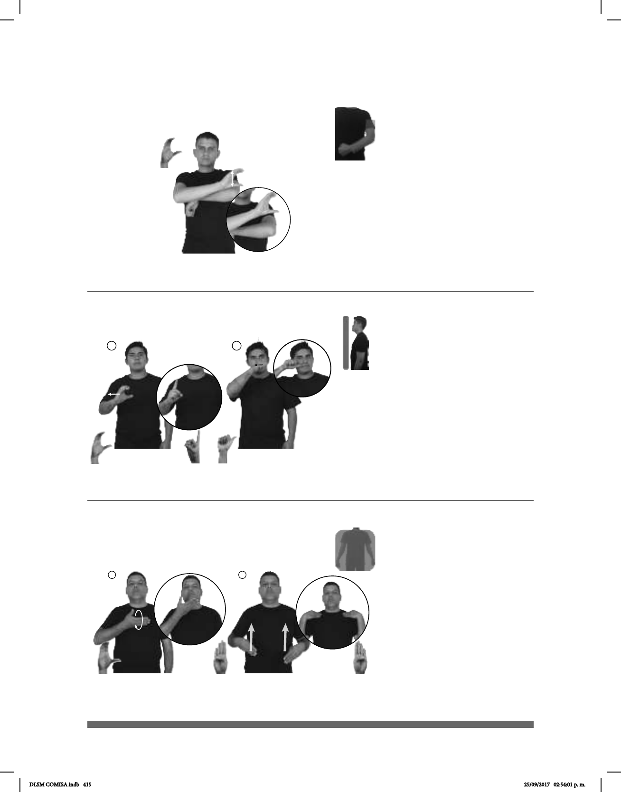

415
(C-58)
CIUDAD DEPORTIVA pro-ELLOS DEPORTE EJERCER
Ellos practican deportes en la Ciudad Deportiva.
1 2
(C-59)
dm-JUAN GABRIEL NACER CIUDAD JUÁREZ
allá
Juan Gabriel nació en Ciudad Juárez.
Seña: SB
MD C.1, MB S.1
MD palma hacia la
izquierda. MB palma hacia abajo.
A la altura del pecho. MD
sobre el antebrazo de MB.
La MD golpea el codo de
MB repetidamente.
1. Zona deportiva ubicada
en la delegación Iztacalco de la Ciudad
de México. 2. sust. f. Estación del STC
Metro de la línea 9.
Seña: SC: I. y II. SM
I. Seña que pasa de
I. Palma hacia la
izquierda; II. Palma oblicua hacia
abajo y hacia afuera.
I. A la altura del pecho,
del centro al lado derecho; II. Sobre
la parte superior de la boca del lado
izquierdo al lado derecho.
I. y II. Recto.
Ciudad del estado de
Chihuahua, perteneciente a los
Estados Unidos Mexicanos.
(C-60)
1
2
Seña: SC: I. SM; II. SS
I. C.3; II. B-P.1
I. Palma oblicua hacia
arriba y hacia adentro; II. Palmas hacia
adentro.
I. A la altura del pecho; II.
De la cintura a los hombros.
I. La mano se mueve
formando círculos; II. Recto.
sust. f. Pieza de tela
grande y, por lo general, rectangular
lana que sirve para abrigarse y se usa
principalmente para dormir.
pos- MI CAMA DOS COBIJAS pro-YO PONER
cama
Yo pongo dos cobijas sobre mi cama.
DLSM COMISA.indb 415 25/09/2017 02:54:01 p. m.